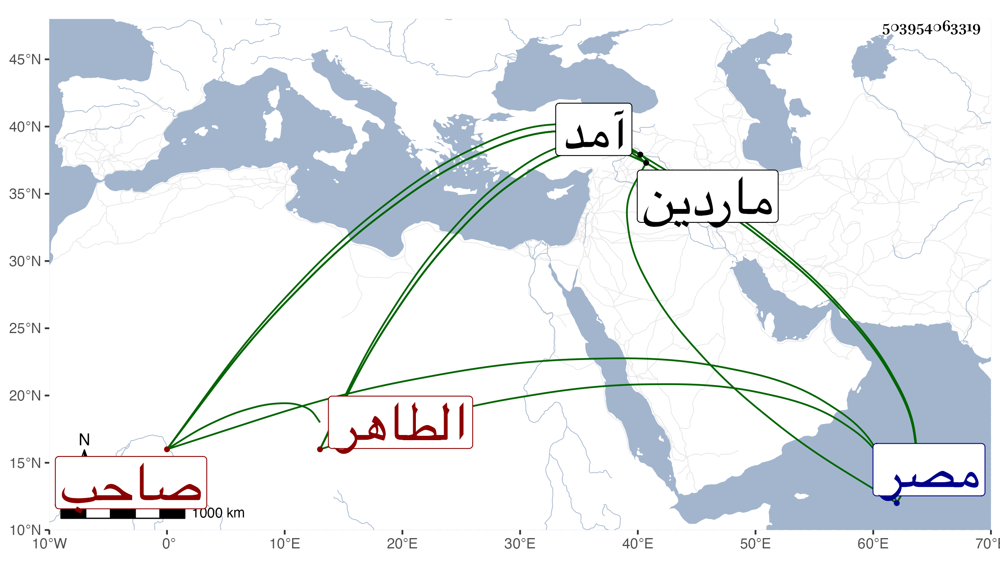

0902Sakhawi.DawLamic.ITO20230111-ara1.EIS1600.503954063319
Biography ID: 503954063319
485
عيسى بن داود بن صالح بن غازي بن قرا أرسلان بن غازي بن أرتق ابن أكسك الطاهر مجد الدين بن المظفر فخر الدين بن الصالح بن المنصور بن المظفر ابن المنصور الأرتقي صاحب ماردين وابن صاحبها ، ملكها بعد أبيه في ذي القعدة سنة ثمان وسبعين وسبعمائة واستمر حتى قدم عليه تيمور فقبض عليه وأهانه واستمر في أسره مدة ثم أكرم بالأموال الجزيلة والمماليك الكثيرة وشرط عليه عدم موالاة الظاهر برقوق صاحب مصر وسار إلى ماردين وقد غاب عنها قريبا من ثلاث سنين فأقام بها إلى أن نزل عليه تيمور أيضا في سنة اثنتين فعصى عليه فتركه ثم كتب إليه يستدعيه وفي صدر كتابه :
| سلام عليكم والعهود بحالها | لقد بلغ الأشواق منا كمالها |
فرد جوابه مع تقادم جليلة واعتذار جميل وكان عنوان كتابه :
| شوقي إليكم زائد الحد وصفه | ولكن تخاف النفس مما جرى لها |
واستمر إلى أن قتل في وقعة جكم على آمد في ذي الحجة سنة تسع ، وملك ماردين بعده ابن أخيه الصالح الشهابي أحمد بن إسكندر استخلفه فيها قبل إمساك تيمور له ، وهو في عقود المقريزي مطول عفا الله عنه .
